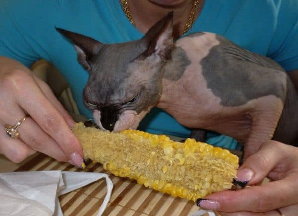
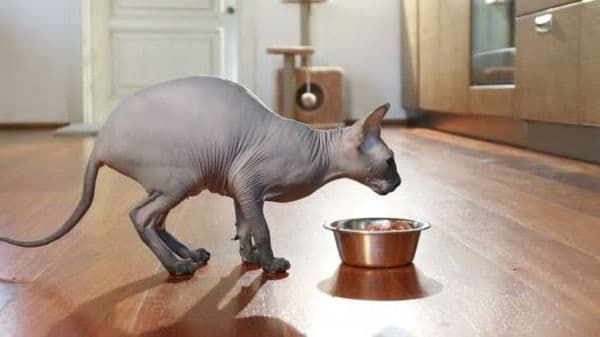

Чем кормить сфинкса
Кормление домашнего питомца лишь на первый взгляд кажется легким. Коты – истинные ценители вкуса, гурманы, отказывающиеся от ароматной сосиски, напичканной химикатами. А такая экзотическая порода котов, как сфинкс, вообще нуждается в особом рационе. Для поддержания комфортной температуры тела лысым питомцам требуется больше калорий, чем их пушистым собратьям. Полноценное меню способствует правильному развитию необычного котенка.
Натуральная пища
Преимущества:
1. Полезно для здоровья.
2. Позволяет учесть особые потребности питомца, скорректировать рацион в случае необходимости.
3. Можно самостоятельно контролировать качество продуктов. Выбирать только свежее мясо, овощи.
Недостатки:
Занимает много времени. Необходимо тщательно продумывать меню, приобретать регулярно продукты и готовить пищу. Если готовить на несколько дней, придется затрачивать время на разогрев.
Готовые корма
Преимущества:
1. Практичность – можно запастись на длительный период.
2. Удобство – на кормление затрачивается несколько минут.
3. Экономия денежных средств. Готовые корма обходятся дешевле. Экономить получается на электроэнергии или газе, так как готовые корма не требуется варить и разогревать.
4. Большой выбор: для различных возрастов, для кастрированных, для питомцев с проблемами пищеварения и др.
Недостатки:
1. Дешевые корма приносят вред здоровью.
2. Готовое питание может стать причиной аллергии.
Натуральный корм должен быть близок к естественной пище котов, обитающих в природе. В основном рацион диких животных состоит из материнского молока, мяса (мыши, птицы), птичьих яиц, рыбы, травы. Злаки, овощи, фрукты попадают в организм случайно, изредка коты их пробуют от голода или из любопытства.
В домашних условиях следует придерживаться естественного рациона:
1. Мясные блюда – готовят из курятины, индейки, телятины/говядины. В природных условиях коты питаются мясными продуктами сырыми, но при этом велик риск заражения гельминтозом. Поэтому рекомендуется кормить домашних любимцев мясом, предварительно отваренным. В крайнем случае мясо замораживают, а перед подачей обдают кипятком.
2. Яйца – присутствуют в рационе изредка. Достаточно покормить кота 1-2 раза в 7 дней перепелиными яйцами. Из куриного животным дают лишь желток, а вот белок лучше исключить, он может стать причиной аллергии.
3. Кисломолочные продукты – способствуют нормализации пищеварительного процесса, поэтому ветеринары советуют включать их в рацион. Творог, кефир, простоквашу дают отдельно от других блюд. Можно предлагать эти продукты котятам, которые постоянно хотят кушать.
4. Сырая рыба – практически вся заражена гельминтами, поэтому перед кормлением питомца следует проварить ее. Чтобы малыш не поранился острыми костями, рыбу очищают от хребта. Чтобы избавиться от мелких костей, отварную рыбу пропускают через мясорубку.
5. Котятам разрешено давать небольшими порциями отварную печень, сердце, почки. В больших количествах эти продукты вызывают расстройство желудка, поэтому их нужно ограничить.
6. Кормить одними кашами нельзя, а добавлять измельченные отваренные крупы в мясо – можно. Необходимо учесть, что мясо должно составлять не менее 70% от общего объема пищи.
7. Если кот выходит на прогулку на улицу, он может самостоятельно найти траву и пожевать ее. Питомцам, которые совершенно не посещают улицу, траву выращивают в домашних условиях. Приобрести рассаду можно в зоомагазине.
Схема кормления
Количество кормлений зависит от возраста питомца. Чем младше малыш, тем чаще его требуется кормить. Например, малыша в двухмесячном возрасте кормят не меньше 6-8 раз в сутки – это нормально, ведь материнским молоком он бы питался так же часто.
С 3-х месяцев частоту кормежек сокращают до 5-6 раз, с 6-ти месяцев – до 3 раз. Питомцы, возраст которых больше 9 месяцев, прекрасно наедаются при двух кормлениях.
Сфинксы из-за своей лысой кожи нуждаются в усиленном питании. Обычно они съедаю все, что им насыпали в миску, поэтому регулировать количество корма должен владелец. Чрезмерное увлечение едой оборачивается проблемами с лишним весом. Сфинксов не следует перекармливать, чтобы избежать ожирения.
Особый рацион котят
Лысые малыши требуют введения прикорма в возрасте 1 месяц. Начинают их подкармливать манной кашей, затем постепенно добавляют перетертое отварное мясо (говядину, курятину), желток яйца. В два месяца рацион дополняют кисломолочной продукцией (творожком, кефиром).
После достижения 3-х месячного возраста рацион котенка можно значительно расширять. Мясо уже не следует отваривать и измельчать, можно предлагать перемороженное и нарезанное ломтиками. Меню дополняют растениями, овощами с фруктами
При недостатке времени на приготовление пищи котенка переводят на готовые смеси (холистики, премиум и супер-премиум категории). Это могут быть специальные консервы или сухой корм. Перед покупкой корма необходимо внимательно изучить этикетку – проверить состав, дату изготовления и срок годности, а также сведения о том, подходит ли корм для малышей. Популярные марки корма для котят-сфинксов:
Purina Pro Plan Junior Chicken;
Royal Canin Babycat Instinctive для самых маленьких (до 4-х мес.);
Royal Canin Kitten – для питомцев постарше (4-12 мес.);
GO! Sensitivity + Shine Duck Cat Recipe Limited Ingredient Diet, Grain Free – для питомцев с чувствительным желудком и проблемами с пищеварением.
Важные советы
Котенок требует заботы и внимания, особенно сфинкс. Особенности его внешнего вида (отсутствие шерсти) приводит к тому, что котенок мерзнет даже летом. Для поддержания нормальной температуры тела ему требуется увеличенное потребление пищи
Необходимо придерживаться следующих рекомендаций:
1. Недоеденную пищу из миски убирают. Некоторые питомцы склонны к обжорству, поэтому могут съесть лишний корм, рассчитанный на весь день.
2. Миска с водой должна быть полной постоянно. Сфинксы в некоторой мере брезгливы, поэтому воду необходимо менять, а посуду мыть.
3. После кормления тарелку также следует вымыть. Оставшаяся пища в теплом помещении может прокиснуть и вызвать пищевое расстройство.
4. Правила кормления должны соблюдаться всеми членами семьи. Непозволительно, чтобы дети угощали любимцев чипсами или копченой колбаской. Гостей также следует предупредить, что кот – член семьи с особыми потребностями, поэтому бросать ему кости со стола нельзя.